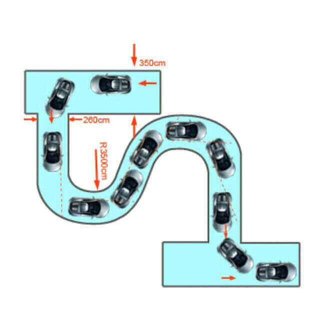

操作要求
车辆从弯道的一端前进驶入，减速换挡，以低挡低速从另一端驶出，行驶中不得挤压路边缘线，方向运用自如。
评判标准
1中途停车，不及格;
2扎压路牙，扣20分;
3熄火，扣20分;
操作方法
1进入弯道前，降低车速，用1挡或2挡驶入S形路，车辆与路右侧保持0.5m左右的距离，适当修正方向(留出左侧内轮差的足够距离)。
2进入第一个弯道，车辆沿道路的右侧进入弯道(距左侧路边缘约1米)，保持匀低速行驶，向左打方向盘，车辆由靠右侧行驶变为靠左侧行驶。
3进入第二个弯道，车辆左侧车轮保持与路边缘线0.5m，适度修正方向。
4出弯道时，回转方向盘，进入直线行驶。
考试技巧
考场其实就是一条“S”形道路，只是路宽仅3.5米。一要保持全程一档行驶，打方向不可过急;二是驶向右弯道时，右轮贴着其右边路牙，反之亦然。
技巧图解

1看左右反光镜对左右线，使车保持正中行驶。
2看对沿线，右转就用车左角对右线，左转就用车右角对左线行驶，车角跟线走。